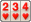
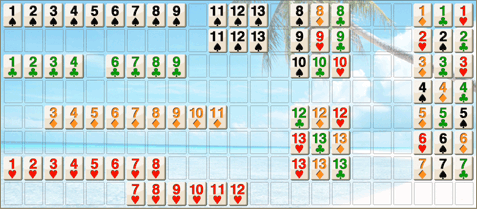

Romi antaa sinun pelata Rummy Tile (RummyCube, Rummikub, Rami) -pelejä tietokonetta vastaan kolmella eri tasolla. Peliä pelataan kahdella 52 kortin pakalla ja kahdella jokerilla . Kaksi jokeria on Jokeri-asetuksen oletus (Normaali, Ei mitään tai Kaikille) kohdassa Asetukset → Peli. Pelin tarkoituksena on muodostaa ryhmiä kolmesta tai useammasta kortista, jotka sisältävät joko peräkkäisiä kortteja samasta maasta tai kortteja samalla numeroarvolla mutta eri maista.
Haluatko ensin nähdä, miten peliä pelataan? Napauta oikeassa yläkulmassa olevaa Esittely -painiketta nähdäksesi Romin pelaavan Romia vastaan. Napauta esittelypalkkia milloin tahansa pysäyttääksesi sen ja palataksesi omaan peliisi.
Kun aloitat uuden pelin, 14 korttia jaetaan satunnaisesti Romille ja 14 pelaajalle. Jälkimmäiset asetetaan telineelle järjestyksessä.
Pelaaja avaa pelinsä pelaamalla vähintään yhden ryhmän 3 tai useammasta kortista, käyttäen vain telineellään olevia kortteja. Näiden korttien arvojen summan on oltava (25, 30 tai 50) tai enemmän.
Kun pelaaja on avannut pelin, hän voi käyttää laudalla olevia kortteja täydentääkseen ryhmiä telineellään olevilla korteilla. Pelaaja voi siirtää tai järjestää uudelleen kaikki laudalla olevat kortit, mutta uusien ryhmien on oltava kelvollisia ja 3 tai useamman kortin ryhmiä.
Romin ikkuna on jaettu kahteen pääosaan: lauta, jossa on 8 riviä 23 solua (yksi sarake lisää Romi-säännöllä 12–13–1), johon asetat pelaamasi kortit, ja teline, johon pelaajan kortit tallennetaan. Laudalle asetetut korttiryhmät on erotettava yhdellä tai useammalla tyhjällä solulla. Pelaajan kortit voidaan asettaa mihin tahansa telineellä.
Romi ei salli sinun asettaa korttia ennen tai jälkeen laudalla olevaa korttia, jos tällä kortilla muodostettu ryhmä ei ole kelvollinen.
Jos et voi tai halua pelata korttia, sinun on nostettava yksi napsauttamalla -kuvaketta.
Kun olet lopettanut vuorosi, napsautat tiimalasia . Romi tarkistaa, että peli on kelvollinen, ja Romi pelaa vuoronsa. Kun Romi pelaa, tiimalasikuvake korvataan tietokonekuvakkeella.
Huomaa, että et voi siirtää kortteja (jotka eivät ole sinun) laudalla ennen kuin avaat pelin omilla korttiryhmilläsi, joiden arvo on (25, 30 tai 50) pistettä tai enemmän.
Asettaaksesi kortin laudalle voit napsauttaa korttia ja se siirtyy automaattisesti laudalle. Jos haluat asettaa korttisarjan, napsauta jokaista korttia järjestyksessä muodostaaksesi sarjan. Voit myös asettaa korttiryhmän (samoilla numeroilla) napsauttamalla jokaista ryhmän korttia.
Voit myös valita kortin ja siirtää sen manuaalisesti valitsemaasi kohteeseen. Jos siirrät kortin 5 kortin tai useamman sarjan päälle (joka sisältää saman kortin), sarja jaetaan kahdeksi sarjaksi.
Voit palauttaa laudan sellaiseksi kuin se oli ennen vuorosi aloittamista napsauttamalla tiimalasikuvaketta, ja sinulla on mahdollisuus palauttaa lauta.
Voit nähdä Romi-pisteesi ja/tai nollata pisteesi napsauttamalla -painiketta ja valitsemalla kohdan Pisteet.
Voit lisätä kortin korttiryhmän loppuun tai alkuun vetämällä kortin vastaavasti ryhmän ensimmäisen tai viimeisen kortin päälle. Jos tila ennen tai jälkeen ryhmän ei ole riittävä, Romi siirtää uuden korttiryhmän paikkaan, jossa on tarpeeksi tilaa.
Romi sallii myös kahden korttiryhmän muodostamisen yhdestä 5 kortin tai useamman ryhmästä ja toisesta kortista, joka on identtinen jonkin tämän ryhmän kortin kanssa. Molempien uusien ryhmien on muodostettava 3 kortin tai useamman ryhmiä. Esimerkiksi jos on korttiryhmä kuten (4,5,6,7,8,9) ja jos sinulla on toinen 6, voit muodostaa seuraavat kaksi ryhmää (4,5,6) ja (6,7,8,9). Pikakuvake toimii valitsemalla 6:si ja vetämällä sen mille tahansa ryhmän (4,5,6,7,8,9) kortille.
Yhtä laitetta voivat käyttää useat ihmispelaajat, jotka antavat laitteen seuraavalle pelaajalle vuoronsa päätyttyä.
Asetukset → Pelaajat -näytöllä poista valinta valintaruuduista sen pelaajan nimen vierestä, jota ihmisen tulisi pelata.
Muutettu valintaruutu tulee voimaan seuraavan pelin alkaessa.
Nosta kortti: Nostaa kortin satunnaisesti ja antaa Romin pelata vuoronsa.
Lajittele maan mukaan:

Järjestää pelaajan kortit telineellä maan mukaan.Asetukset: Antaa sinun muuttaa ja tallentaa asetuksesi Romille.
Pelatut kortit: Näyttää sinulle Romin pelaamat kortit viimeisellä vuorollaan tai kortit, jotka pelasit vuorosi aikana.
Vahvista: Tarkistaa, että laudalle pelatut korttiryhmät ovat kelvollisia.
Tiedot: Voit nähdä Romin dokumentaation, nähdä pisteesi tai aloittaa uuden pelin.
Siivoa lauta: Järjestää kortit laudalla erityiseen järjestykseen kuten alla:

Kohdassa Asetukset → Asettelu → Painikkeet voit piilottaa painikkeet, joita et koskaan käytä. Nosta kortti on ainoa, jota ei voi koskaan piilottaa.
Kun piilotat Siivoa lauta , Vahvista tai Pelatut kortit , painike yksinkertaisesti poistuu.
Lajittele maan mukaan ja Asetukset toimivat toisin: niiden ruutua ei koskaan poisteta, siitä tulee pysyvästi Tee uudelleen ja Kumoa, harmaana, kun mitään ei ole tehtävissä uudelleen tai kumottavissa. Asetuksiin pääsee edelleen valikosta .
Vaikka kumpikin painike näkyy, lajittelupainikkeesta tulee Tee uudelleen heti kun olet kumonnut jotakin, ja asetuspainikkeesta Kumoa heti kun jokin siirto on peruttavissa.
Pelitaso: Valitse kohdassa Asetukset → Peli Aloittelija, Keskitaso tai Asiantuntija. Taso määrää, kuinka taitavasti Romi muodostaa ryhmänsä, varastaa kortteja laudalta ja rakentaa purkamansa ryhmät uudelleen.
Romi-sääntö: Standardi tai 12–13–1. Säännöllä 12–13–1 ässä voi seurata kuningasta myös suoran lopussa (esimerkiksi 11-12-13-1), ja lauta saa yhden sarakkeen lisää. Suora päättyy siihen: ässän jälkeen ei tule kakkosta, eikä suora voi sekä alkaa että päättyä ässään (1-2-…-13-1).
Jokeri: Normaali (pakassa kaksi jokeria), Ei mitään (ei jokereita) tai Kaikille (ei yhtään pakassa, mutta jokainen pelaaja aloittaa yksi jokeri kädessään).
Avaus: Avaamiseen tarvittavat pisteet: 25, 30 tai 50.
Aikaraja ja rangaistus: 0 (ei rajaa) – 5 minuuttia vuoroa kohti. Kun aika loppuu, lauta palaa vuorosi alun tilaan — paitsi tasolla Aloittelija tai yksinpelissä, kun Aikarajarangaistus-kytkin on pois päältä. Tasolla Asiantuntija nostat silloin lisäksi kaksi korttia yhden sijaan.
Voittaja aloittaa: Kun tämä on päällä, edellisen pelin voittaja pelaa seuraavassa ensimmäisenä.
Romikin varastaa: Kuten sinä, Romi voi ottaa kortteja laudan ryhmistä ja rakentaa ne uudelleen, kunhan jokainen ryhmä on yhä kelvollinen sen vuoron lopussa.
Paneeli vasemmalla: Kohdassa Asetukset → Asettelu tämä kytkin siirtää sivupaneelin näytön vasempaan reunaan oikean sijasta. Pysty- ja vaakasuunnalla on kummallakin oma kytkimensä.
Tablettiasettelu: Vaakasuunnassa lauta täyttää koko leveyden, ja teline, painikkeet ja paneeli asettuvat riviin sen alle. Tableteissa käytössä oletuksena.
Mukauta laattoja: Kohdassa Asetukset → Ulkoasu valitse valmis paletti (Vakio, Värisokea, Suuri kontrasti tai Yksivärinen), tai ota Mukautettu ja napauta laattaa valitaksesi jokaisen maan värin ja symbolin. Jokerilla on oma värinsä, jota muutetaan samalla tavalla. Kutakin symbolia voi käyttää vain yksi maa, joten kaksi maata ei voi koskaan näyttää samalta laudalla.
Pöydän tausta: Myös kohdassa Asetukset → Ulkoasu. Neljän numeroidun taustan vieressä valinta Väri avaa värikartan, josta valitset haluamasi taustavärin. Valinnalla Valokuva voit sen sijaan käyttää omaa kuvaasi: se kopioidaan sovellukseen, näytetään valitun värin kevyen hunnun alla ja pysyy vain tällä laitteella.
Täytä Romi-pelaajilla: Kun toimit verkkopelin isäntänä, paikat joihin kukaan ei liittynyt pelataan tietokoneen toimesta pelin alkaessa: näin 3 tai 4 paikan pöytää voi pelata 2 ihmistä. Tarvitaan vähintään kaksi ihmispelaajaa.
Jos pelaaja poistuu pelistä eikä palaa, pöytä ei enää jää jumiin hänen vuoroonsa: kun hänen uudelleenyhdistämisaikansa on kulunut, hänen kaksi seuraavaa vuoroaan pelataan tavallisena nostona, ja sen jälkeen tietokone ottaa paikan. Näiden kahden vuoron aikana palaava säilyttää paikkansa; myöhemmin palaava saa sen takaisin tietokoneelta.
Romi-versiot Mac OSX:lle, IOS:lle ja Windowsille ovat myös saatavilla Romin verkkosivulla: https://romi.ca